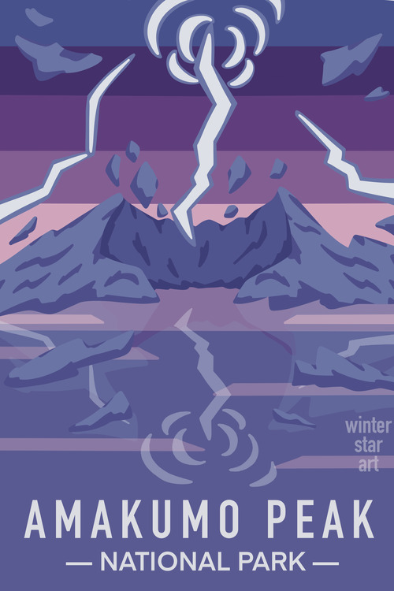
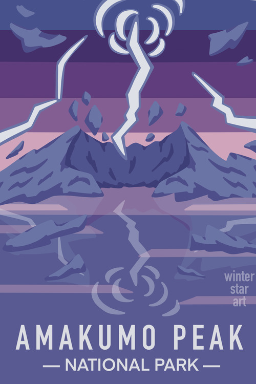

Portfolio
A collection of some of my best art pieces, and general examples of my work. Includes finished artwork, landscapes, sketches, graphic design work, and costume designs. For all areas of my skillset, I am capable of expanding, and experimenting with new styles and concepts.
Finished Artwork
My finished artwork is generally created with the drawing app Procreate. Pieces typically take between 1-5 hours to complete, depending on the complexity. I am experienced with drawing people, fantasy creatures, landscapes, and more.


Landscapes
Landscape art is generally created with the drawing app Procreate, and pieces generally take 1-2 hours to complete. Inspiration is taken from both pop culture, and real life.
Sketches
Sketches are done on paper, in the drawing app Procreate, and in various other mediums. The time it takes to complete each sketch varies, but is generally much faster than finished artwork.

Graphic Design
My graphic design work typically follows the process of: Brainstorming - Sketching ideas - Mock-ups - Final result. Below are examples of finished graphic design work, completed with various graphic softwares.
 

Costume Design
I have created dozens of costumes over the past few years, and many of them were designed by me. Most of my costumes go through several design iterations before I am satisfied with the final result. Costumes are based on various costumes from pop culture, as well as my own imagination.